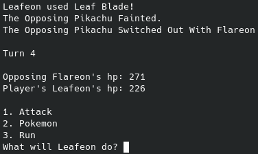

Pokémon Battle Simulator
Pokémon Battle Simulator
Language: Python
GitHub RepositoryThe final project for my Computer Programming 2 class was to incorporate a lot of what we had learned over the semester into one project (mainly classes, functions, and json APIs). I decided to make a Pokémon battle simulator. I loved programming it so much that I'd spend hours outside of class working on it and making it as good as I could. I'm really happy with the end result, and although it doesn't include everything I had wanted in it at the start, I think it ended in a great place.

Cityscape Animation
Cityscape Animation
Language: Java
GitHub RepositoryOne of the summative assignments in my AP Computer Science A class was to create an animated cityscape with different classes we create. Many students tend to create cityscapes in 2d, but I wanted to challenge myself and add another dimension. I decided to make the animation be a scene looking and going down the road into the sunset, and I think it turned out well! Later in the year, I was encouraged to add new things into my cityscape. At the time, the road in my cityscape was just a solid shape with no features. I thought that was a little boring, so I added some road lines, which I think made it look even better. I found it really fun to design a way to turn a set of 3d points into 2d points using just a single formula; it was so satisfying to see it work the first time. I learned a lot leading up to this project: my favorite thing we learned for this was graphics, as I had never worked with graphics in Java before and had always been slightly afraid to try. I really believe fun projects like this one are amazing things to help students get drawn into CS and see the awesome things they can do by typing some funny words into a computer.